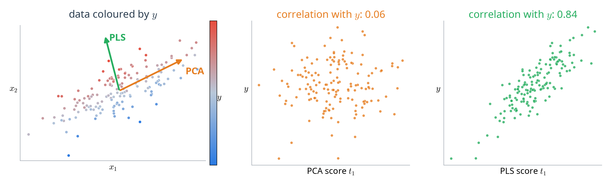
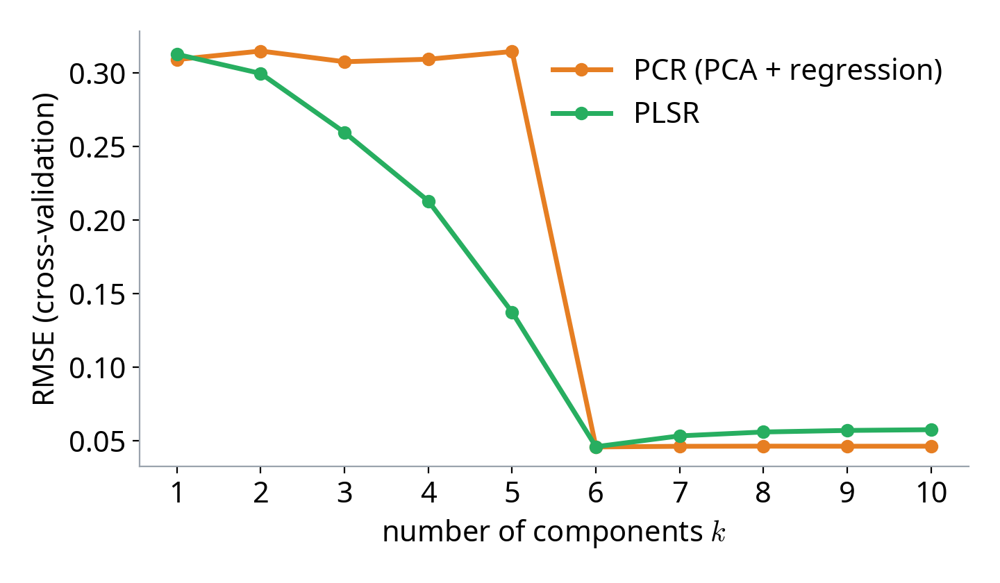
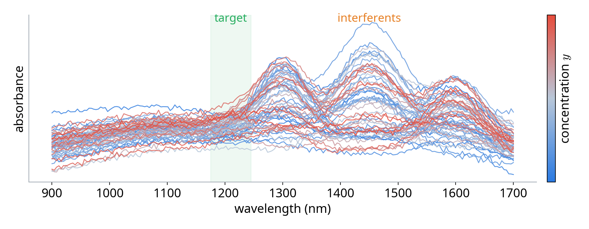
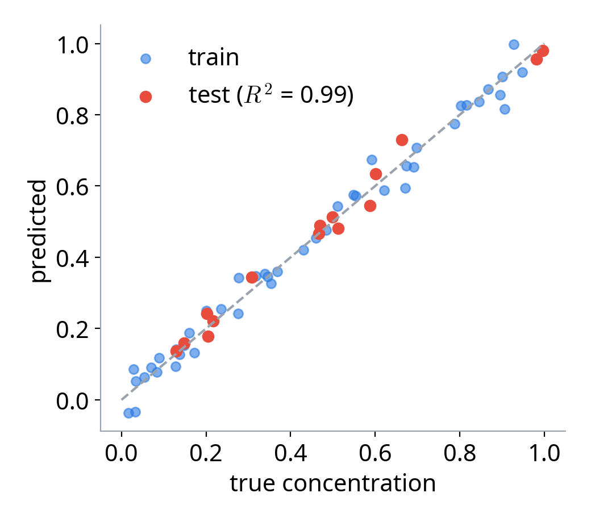

IAI · UET · VNU
Presenter: Trinh Ngoc Huynh
Email: huynhtn@vnu.edu.vn
Why unsupervised reduction can miss the target
Maximising covariance with the response
NIPALS: weights, scores, loadings, deflation
Spectroscopy, p > n data, multiple outputs
When PLSR falls short
Predict \( y \) from \( X \in \mathbb{R}^{N \times d} \) with ordinary least squares:
\( X^T X \) is nearly singular: huge, unstable coefficients
\( d > N \): \( X^T X \) is not invertible at all
the model fits the noise and generalises poorly
We need a few informative directions instead of all \( d \) raw features.
Principal Component Regression (PCR): run PCA on \( X \), then regress \( y \) on the top components.
keep directions of maximum variance of \( X \)
least squares on \( k \) uncorrelated scores

PCA keeps the direction with most spread (correlation 0.06 with \( y \)); PLS finds the direction that predicts \( y \) (0.84).
unsupervised: only \( X \)
only \( y \): unstable when features are correlated
balances both
\( \operatorname{Cov} = \operatorname{Corr} \times \operatorname{std}(Xw) \times \operatorname{std}(y) \): PLS rewards directions that have variance and predict \( y \).
PLSR explains \( X \) and \( y \) through shared latent scores \( T \):
loadings \( P \): how scores rebuild \( X \)
coefficients \( q \): how scores predict \( y \)
latent variables, \( k \ll d \)
directions in feature space
what the \( k \) components miss
Unlike PCA, the scores \( T \) are chosen to be useful for predicting \( y \).
project \( X \) onto a direction \( w_1 \)
\( \propto w_1^T X^T y \) for centred data
prevents arbitrary scaling
no eigenproblem needed for one output
The first PLS direction is simply the (normalised) covariance between each feature and \( y \).
With several responses \( Y \in \mathbb{R}^{N \times m} \), find two directions \( w \) and \( c \):
of the cross-covariance \( X^T Y \)
of the same matrix \( X^T Y \)
PCA is the SVD of \( X \); PLS is the SVD of \( X^T Y \).
After component 1, remove what \( t_1 \) already explains and repeat on the residuals:
\( p_1 = X^T t_1 / t_1^T t_1 \)
\( q_1 = y^T t_1 / t_1^T t_1 \)
each component carries new information
later components explain what earlier ones missed
Deflation plays the role of PCA's orthogonality constraint.
| PCA | PCR | PLSR | |
|---|---|---|---|
| Uses \( y \)? | no | only in the last step | yes, to find directions |
| Objective | \( \max \operatorname{Var}(Xw) \) | PCA, then least squares | \( \max \operatorname{Cov}(Xw, y) \) |
| Solved by | SVD of \( X \) | SVD of \( X \) | SVD of \( X^T Y \) / NIPALS |
| Task | compression, visualisation | regression | regression |
| Components needed | — | often many | usually fewer |
PLSR is supervised dimensionality reduction.
centred data and a number of components \( k \)
a linear model \( \hat{y} = X \hat{\beta} \) built from \( k \) latent scores
Running example (already centred): \( X = \begin{bmatrix} 2 & 1 \\ 1 & 2 \\ -1 & -1 \\ -2 & -2 \end{bmatrix}, \; y = \begin{bmatrix} 2 \\ 0 \\ -1 \\ -1 \end{bmatrix} \)
Weights → Scores → Loadings → Deflate, then \( \hat{\beta} = W (P^T W)^{-1} q \)
Covariance of each feature with \( y \), normalised
It is the direction that maximises \( \operatorname{Cov}(Xw, y) \)
Features that co-vary more with \( y \) get larger weights.
Project every sample onto \( w \)
\( t \) is the latent variable that summarises \( X \) for predicting \( y \)
\( d \) features become one number per sample.
Regress \( X \) and \( y \) on the score \( t \)
\( p \) rebuilds \( X \) from \( t \); \( q \) predicts \( y \) from \( t \)
One component already explains two thirds of the variance of \( y \).
Remove the part of \( X \) and \( y \) explained by \( t \)
The next component then captures only new information
Repeat steps 1–4 for \( k \) components.
\( k \) is the main hyper-parameter: too few underfit, too many fit the noise. Pick it by cross-validation.

PLSR improves from the first component; PCR needs 6, because its first 5 directions describe interferents.
Predict a chemical concentration from a near-infrared spectrum (200 wavelengths, 60 samples):

Wavelengths are highly correlated and \( d > N \): least squares fails, PLSR is the standard tool.

A handful of supervised components is enough for accurate prediction.
PLSR works directly when \( d \gg N \), where least squares is undefined:
thousands of gene expressions, tens of patients
hundreds of metabolite peaks per sample
many voxels, few subjects
PLSR never inverts \( X^T X \): it only needs \( k \le N \) latent components.
PLS2 predicts several correlated responses \( Y \in \mathbb{R}^{N \times m} \) with one shared set of scores:
chemical profile → several sensory scores
sensor readings → several quality measures
plot the first two scores to see how samples relate to \( Y \)
Sharing latent scores across outputs uses their correlation instead of fitting each separately.
saturation or thresholds are poorly captured
products of features are not modelled
Alternatives: kernel PLS, neural networks, gradient boosting
cross-validation estimates are noisy
the best \( k \) changes with the data split
Alternatives: repeated / nested cross-validation, one-standard-error rule
positive and negative weights across many features
large weight ≠ causal effect on \( y \)
Alternatives: VIP scores (variable importance in projection), sparse PLS
a feature in large units dominates the covariance
a few extreme samples can rotate the components
Alternatives: centre and standardise features; robust PLS for outliers
PLSR is a strong, simple baseline when features are many and correlated.
PCA → SVD → PLSR: from unsupervised to supervised dimensionality reduction.